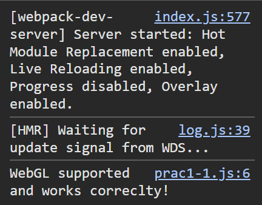

Memoria
Descripción de la práctica
En esta primera sesión práctica, hemos introducido el uso de WebGL y las posibilidades gráficas en tiempo real que ofrece. Se crearon seis scripts que representaban las principales funcionalidades que proporciona este estándar.
Después de configurar el entorno de trabajo, se crearon scripts y páginas HTML para verificar el funcionamiento de WebGL. Además, se implementaron funcionalidades para crear un canvas, redimensionar la escena, posicionar y rotar un objeto dentro de la escena, y colocar múltiples objetos en ella, asegurando que la escena se ajustara dinámicamente al tamaño de la ventana web en caso de redimensionamiento. Además, se aplicaron sombras, luces y materiales utilizando diferentes técnicas, y se creó un objeto 2D utilizando índices y vértices.
Ejercicio 1
En primer lugar, se comprobó si el contexto WebGL funcionaba correctamente en el navegador. La solución encontrada fue utilizar una comprobación if-else imprimiendo un mensaje en la consola en caso de funcionamiento o de error. En Google Chrome, para desactivar WebGL, el navegador se inició introduciendo la opción «--disable-3d-apis» en la sección «Propiedades» del acceso directo de Chrome.
Ejercicio 2
En el ejercicio 2, se creó una escena en la que hay un cubo de material base. La cámara está colocada de tal forma que sólo se muestra una de sus caras, de hecho se percibe como un cuadrado. Se utilizaron los constructores proporcionados por la librería three.js para crear la escena, el renderizador, la cámara y el cubo, para luego añadirlo a la escena y mostrarlo en pantalla.
Ejercicio 3
Aquí hemos girado el cubo mostrado en el ejercicio 2, 36° con respecto a los ejes X e Y. Para realizar la rotación correctamente, los ángulos deben expresarse en radianes. Aquí se puedes apreciar realmente la escena en 3D.Además, la escena se redimensionó para ajustarse al tamaño de la ventana, incluso cuando ésta se redimensiona.
Ejercicio 4
En este ejercicio, visualizamos tres objetos sólidos, situados a la misma distancia a lo largo del eje x: un cubo rojo, un cilindro azul y una esfera verde. El cubo y la esfera se colocan delante de la cámara, sin ninguna rotación, mientras que el cilindro está ligeramente girado a lo largo de los ejes X e Y. Los objetos se crearon utilizando los constructores de la biblioteca three.js que permiten crear las geometrías sólidas de cubo, esfera y cilindro insertando en ellos los parámetros deseados.
Ejercicio 5
En este ejercicio tenemos la misma visualización que en el ejercicio anterior, pero añadiendo una geometría plana en forma de casa. Esta geometría se ha creado a partir de un conjunto de vértices: cuatro para la base de la casa y uno para el tejado. A continuación, se han especificado los índices que representan los triángulos que forman la geometría: dos triángulos forman la base cuadrada de la casa y cuatro triángulos conectan el vértice superior con la base para formar el tejado. La cámara se alejó ligeramente para visualizar bien todos los objetos.
Ejercicio 6
En el último ejercicio, se han añadido distintos tipos de materiales a las figuras del ejercicio anterior: el cubo utiliza un material de base, el cilindro un material de tipo Lambert y la esfera un material de tipo Phong. Para visualizar correctamente los materiales de tipo Lambert y Phong, se incluyeron efectos de luz: en concreto, se modificaron la luz ambiental, la direccional y la puntual, utilizando de nuevo los componentes que ofrece la librería three.js. No se aplicaron materiales distintos del el de base ni efectos de iluminación a la casita.
Dificultades encontradas
-
Las dificultades encontradas al realizar estos ejercicios fueron las siguientes:
- Trabajar con vértices e índices: la disposición incorrecta de los vértices o los índices causó que la geometría no se mostrara correctamente. Para solucionarlo, se verificaron las coordenadas de los vértices y se comprobó que los índices conectaran de forma adecuada los puntos en el orden correcto.
- Gestión de materiales, luces y sombras: el problema fue que las luces y sombras no se visualizaban correctamente en los materiales Phong y Lambert. Para solucionarlo, se realizaron varias pruebas con los parámetros de los materiales y las configuraciones de las luces, ajustando la intensidad y los ángulos hasta lograr un efecto más adecuado.